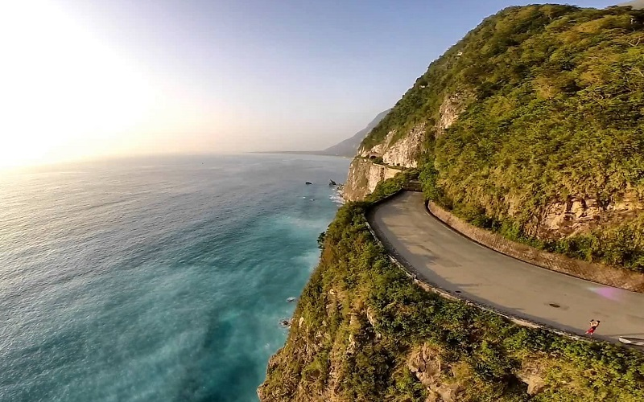

Chingshui Cliff
Hualien County
Chingshui Cliff
Chingshui Cliff is a coastal cliffs averaging 800 meters above sea level in Xiulin Township, Hualien County.
The cliff is located at the southern part of the Suhua Highway that connects the counties of Yilan and Hualien and
is considered to be a very scenic area and is the highest coastal cliff in Taiwan. The magnificant scene of the cliffs
results from the plate tectonics of the Philippine Sea Plate and the Eurasian Plate, and the stratum protrde above the sea level
is composed of marbles and gneiss.
- Best seasons: all year around
- Transportation:
Qingshui Cliff is accessible southwest from Heren Station of the Taiwan Railway Administration.